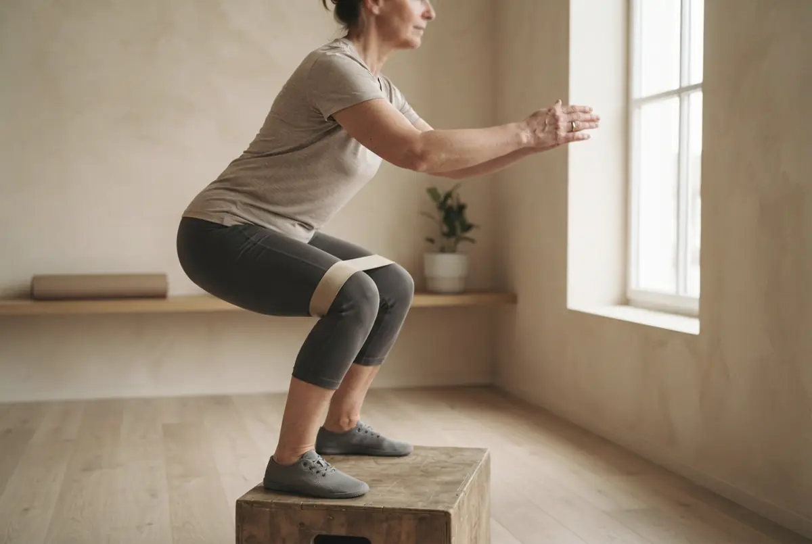

Inicio · Con el movimiento
Entrenadora personal para mujeres en Córdoba
Fuerza pensada para el cuerpo de una mujer a partir de los 40, en grupos pequeños, uno a uno o en tu casa.

No entrenamos para un espejo. Entrenamos para tu vida en Córdoba.
- Subir la Cuesta del Bailío sin pararte.
- Ir a los Patios en mayo sin que te duelan las rodillas.
- Cargar la compra de la Corredera de una vez.
- Bailar en la Feria hasta que cierren.
- Levantarte del sofá sin apoyar las manos.
Tres formas de entrenar conmigo.
La misma forma de trabajar y la misma app. Cambia cuánta atención tienes y dónde entrenas.
Grupo reducido, en la sala
Si te motiva entrenar con otras y quieres una rutina fija. Te corrijo a ti, no a una fila.
Solo tú, en la sala
Si empiezas con una lesión o quieres ir a tu ritmo.
Voy yo
Sola o con una amiga. El material lo llevo yo.
Una sesión, 50 minutos.
Una estructura que se repite, para que sepas a qué vienes. Lo que cambia es la carga, poco a poco.
Soltar
Caderas, hombros y respiración.
Fuerza
Sentadilla a cajón, remo y peso muerto con goma.
Equilibrio y juego
Por parejas y con música.
Bajar
Estirar y dos minutos de calma.
El primer día no entrenas: te mido.
Así, dentro de unas semanas, lo que ha cambiado es un número y no una impresión. Y la valoración es gratis.

Tu punto de partida
Y entre clase y clase, tu app.
Tus números cada vez que repetimos las pruebas, lo que toca hoy si no vienes, y sesiones cortas de yoga y movilidad para los días de descanso.
Tus medidas
- Sentadilla a cajón · 3 × 10hecho
- Remo con goma · 3 × 12hecho
- Movilidad de cadera · 8 minhoy
Pantalla de ejemplo
Lo que me preguntáis.
¿Tengo que estar en forma para empezar?
No. El primer día te mido y ajusto cada ejercicio a lo que puedes hacer hoy.
Tengo artrosis, osteoporosis o dolor de espalda. ¿Puedo?
En la mayoría de casos, la fuerza bien adaptada ayuda. Lo hablamos en la valoración y, si hace falta, con tu médico o tu fisio.
¿Me voy a poner «grande»?
No. Lo que vas a notar es firmeza, fuerza y que la ropa te cae distinta.
¿Sirve si estoy en la menopausia?
Es justo cuando más sirve: la fuerza es lo que mejor frena la pérdida de músculo y hueso. Y cuidamos el suelo pélvico en cada sesión.
¿Qué tengo que llevar?
Ropa cómoda, zapatillas y agua. El material lo pongo yo, también en tu casa.
Tus 3 pasos para empezar
Sin compromiso. La valoración es gratis y el plan lo decides tú.
Me escribes
Por WhatsApp, con tus palabras: qué notas y desde cuándo. Te respondo yo.
Valoración gratis
Te mido, hablamos de tu salud y de lo que quieres conseguir. Sin prisas.
Tu plan
Manos, movimiento o las dos cosas. Tú decides, y cada pocas semanas lo revisamos juntas.